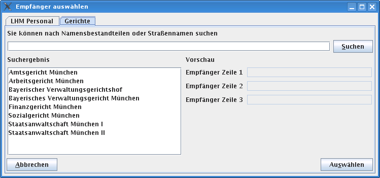
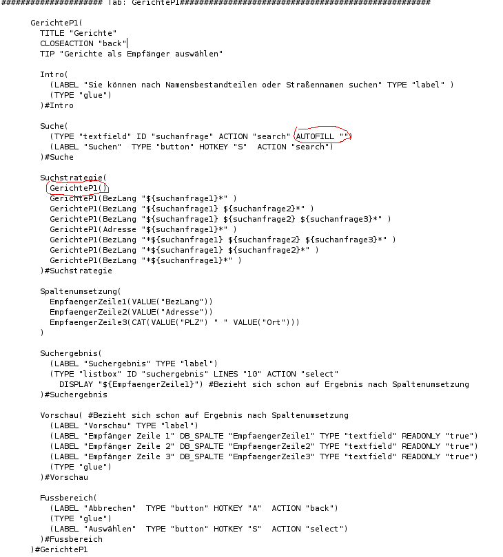

Fragen rund um Datenquellen
Ich möchte eine externe Datenbank als Datenquelle im WollMux verwenden
siehe Datenbanken mit dem WollMux verwenden
Ich möchte sämtliche Daten einer Datenquelle in der Empfängerauswahl sehen
Gerade wenn man nur wenige Datensätze in der Datenquelle hat, ist das recht ergonomisch für den Benutzer.

Dafür sind zwei Änderungen in der conf wichtig, die hier rot eingekreist sind.
